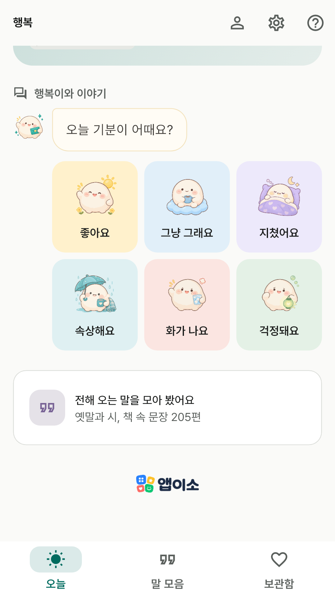
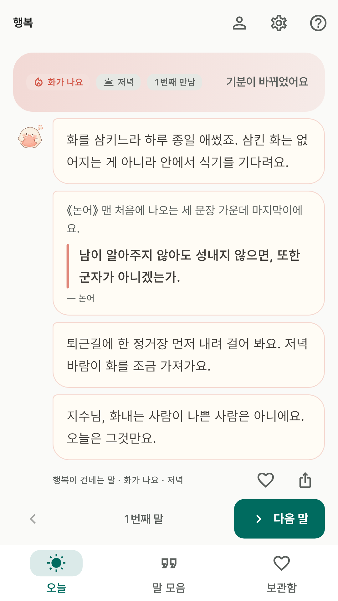
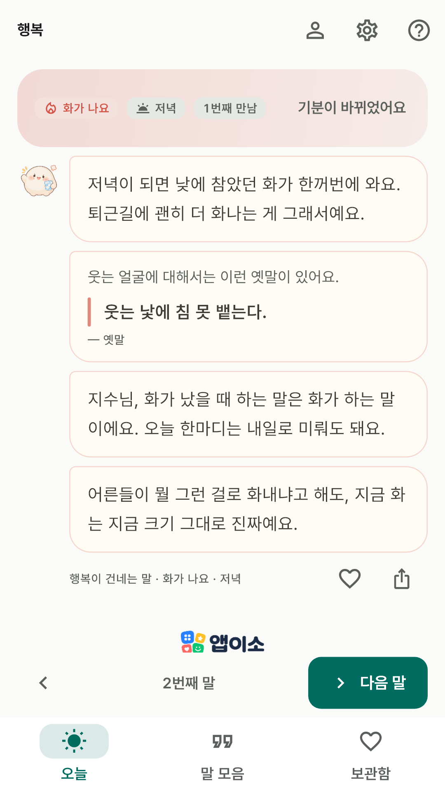
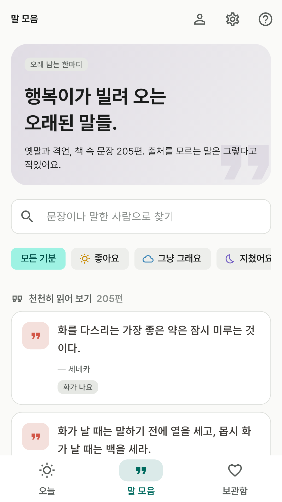
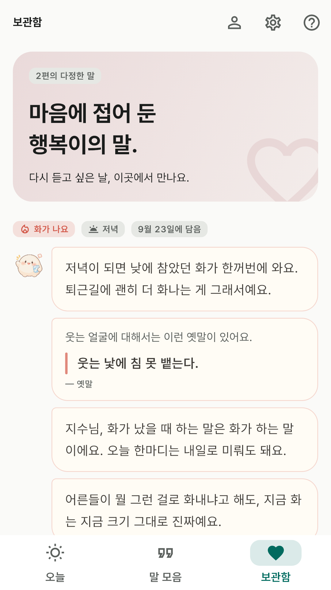
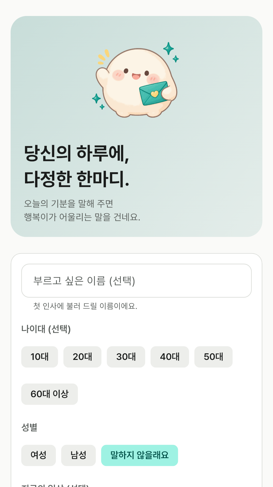

광고 없이 완전 무료입니다. 결제도, 로그인도, 계정도 없습니다.
말과 그림이 모두 앱에 들어 있어 인터넷 없이 쓸 수 있습니다.
이런 앱이에요
화가 난 밤, 지친 아침, 괜히 좋은 오후.
앱이소 행복은 오늘의 기분을 물어보고, 지금 이 때(아침·낮·저녁·밤)에 어울리는 말을 대화하듯 건네는 앱입니다.
다정한 모찌 그림과 종이색 말풍선을 따라, 듣고 싶은 만큼 머물러 보세요.
이런 걸 할 수 있어요
하나만 물어봐요 — "오늘 기분이 어때요?"에 좋아요 · 그냥 그래요 · 지쳤어요 · 속상해요 · 화가 나요 · 걱정돼요 중
하나로 답하면 돼요. 아침·낮·저녁·밤은 묻지 않고 기기 시각으로 정해요. 위치나 날씨는 조회하지 않아요.
행복이가 건네는 네 마디 — 지금 마음을 알아주는 첫마디, 옛말과 시·책 속 문장 한 줄,
지금 이 때의 힘을 빌려 볼 수 있는 작은 제안, 그리고 마지막 한마디. 밤의 말과 아침의 말이 달라요. 나이대와 일상을 알려 주면 그 상황에 맞는 말이 섞여요.
넘겨 읽기 — 한 편을 다 읽고 옆으로 넘기거나 [다음 말]을 누르면 같은 기분으로 다음 편이 이어져요.
횟수 제한은 없어요. 아직 듣지 않은 말부터 고르고 다 들었으면 처음부터 다시 돌아요. 기분이 바뀌면 처음부터 다시 골라요.
말 모음 — 대화에 나오는 옛말·시·책 속 문장을 전부 모아 두었어요. 문장이나 말한 사람으로 검색하고
기분별로 골라 읽어요. 출처를 확인할 수 없는 문장은 "전해 오는 말"로 표시해요.
언제든 고치는 프로필 — 별명·나이대·성별·일상은 모두 선택 사항이에요.
홈 오른쪽 위에서 수정하면 다음 말부터 반영되고, 오늘의 대화와 보관함은 그대로 남아요.
마음에 남는 말은 보관함에 — 하트로 네 마디를 통째로 담아 두고 다시 읽어요. 출처와 함께
메신저나 메모 앱으로 공유할 수도 있어요.
그림 스물다섯 장 — 말을 건네는 모찌가 기분에 어울리는 모습으로 함께해요.
밝게 · 어둡게 — 시스템 설정을 따르거나 직접 고를 수 있어요. 밤에 열어도 눈이 부시지 않아요.
이 앱이 하지 않는 것
기분을 날짜별로 기록하거나 그래프로 보여주지 않아요. 오늘의 대화와 직접 담은 보관함만 남겨요.
듣는 횟수나 속도를 정하지 않아요. 자기에게 편한 만큼 머물면 됩니다.
알림을 보내지 않아요. 생각날 때 열면 됩니다.
앱 안에서는 이렇게 보여요

오늘 기분이 어때요?

기분에 맞춰 건네는 네 마디.

넘기면 다음 말이 이어져요.

대화에 나오는 오래된 말들.

마음에 남는 말은 보관함에.

비워 둬도 괜찮고, 나중에 고쳐도 돼요.
화면에 보이는 이름과 인사말, 날짜는 기능을 설명하기 위한 예시입니다.
개인정보
이 앱에는 회원가입이 없고 개발자에게 개인정보를 전송하지 않습니다.
별명·나이대·성별·일상은 선택해서 입력하며, 기분은 오늘 건넬 말을 고르는 데 사용해요.
기분을 날짜별로 모으거나 위치를 알아내지 않아요. 프로필·오늘의 대화·보관함과 받은 말 조각 ID,
만남 횟수·마지막 만난 날짜·테마 설정은 휴대폰에 저장됩니다.
폰을 바꿀 때 보관함이 따라오도록 구글 계정 자동 백업은 켜 두었어요 — 백업은 안드로이드가
사용자 계정으로 하는 기능이고, 개발자는 그 내용을 받지 않습니다. 자세한 내용은
개인정보처리방침을 확인해 주세요.
문의
버그 제보나 넣었으면 하는 기능이 있으면
appisoLabs@gmail.com 으로 알려주세요.
어떤 버전에서 생긴 일인지(앱 도움말 맨 아래에 적혀 있어요) 같이 적어주시면 도움이 됩니다.